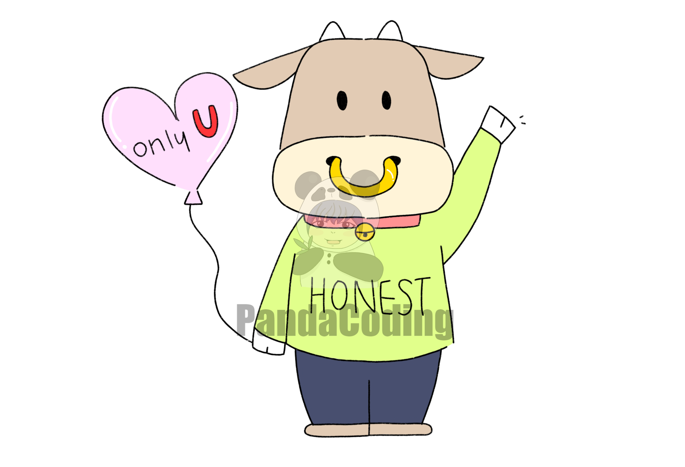

당신의 연애유형은?!
난 너만 봐, 정직한 연애 스타일의 '소'

연애 유형의 진국인 당신! 소에 해당하는 당신은 상대방만 바라보는 해바라기 연애 스타일이랍니다. 매사에 끈기가 있어 연애를 할 때 성실하고 진심을 다하는 성향을 가지고, 온화하며 따뜻한 마음을 가지고 있어요. 한 번 좋아하면 끝까지 좋아하는 의리파지만 자존심이 쌔 은근히 고집이 강하답니다. 또한 욱하는 성질이 있어 이런 부분들을 조심해야 하고, 질투심이 많아 사랑이 집착으로 바뀔 수 있어 주의해야 된답니다!